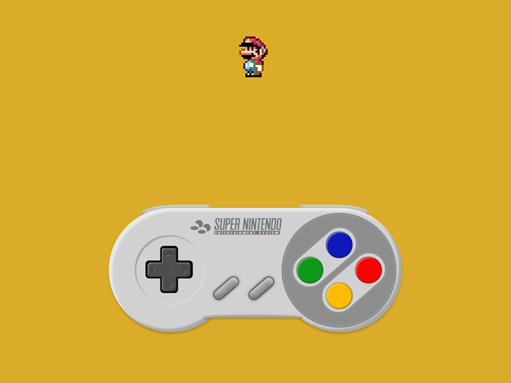

Create an artwork using CSS
Problem
Create a complex graphic using mostly CSS. I made this during an optional course where the focus was mostly to test the limits of CSS. Creating clean code wasn't that much of an issue as it was mostly meant as an excercise in learning CSS to it's fullest potential.
Process
I started by drawing out what I wanted to make and splitting them up in components. I needed to know what would be nested in what. So I drew the controller and pretty much decided how many objects or div's I would make in total. Then I started making the base, starting with the biggest objects first. I used a lot of insetted box-shadows to create a skeuomorphic look. I also made it so that when pressing any of the buttons, the shadows will change so it looks like its being pressed. When I was done with the controller, I decided to add a little Mario... Which I also created using CSS only. I used JavaScript to make sure he jumps when you press the A button.
Result
The result is a one page website with a nice looking controller made entirely using CSS. Again, the goal wasn't to create clean code, but to learn the ropes of CSS. And I most definitely learned a lot! Doing this excercise definitely made me more confident in writing CSS for any website I make in the future.
Check out the result